Agents are moving from demos to systems people actually depend on. That shift needs engineers who care about orchestration, observability, failure modes and evaluation as much as the model. That's the work I do.
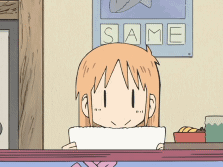
| tribev2 | SHIPPING | NeuroLens — interactive neuroscience analysis on Meta's TRIBE v2 brain-encoding model. PyTorch, CLIP, Whisper, fMRI visualisation. |
| Moonsense | SHIPPING | Multi-agent skincare system — medical diagnosis, environment analysis, product matching and safety validation as separate agents. FastAPI, Next.js, Gemini, Langfuse. |
| MiroFish | EXPLORING | Swarm engine — thousands of agents with independent personalities forecasting scenarios over GraphRAG. |
| agentscope | EXPLORING | Alibaba's multi-agent framework. MCP, A2A, and what production orchestration actually requires. |
Issues and pull requests filed upstream — mostly orchestration edge cases and failure modes found while building on these.
Most of what I build starts as a question I can't answer by reading — so I build it, break it, and measure what survives. Everything above refreshes itself nightly from the GitHub API; nothing here is a badge service.
If something I've built is useful to you, or wrong, open an issue.